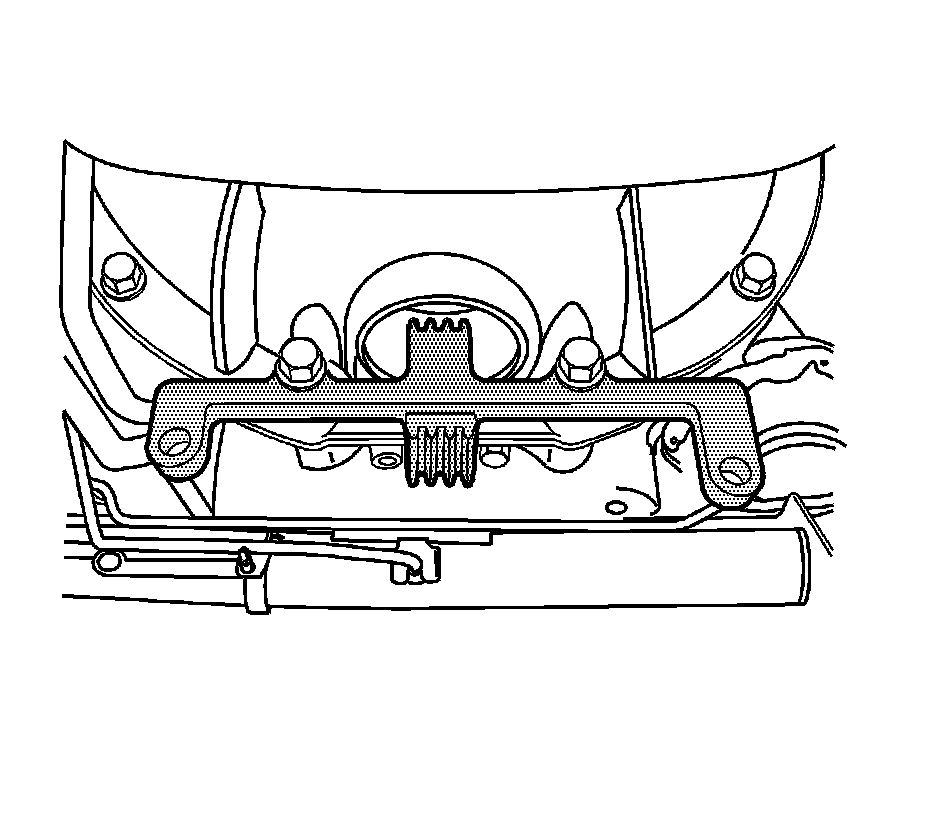
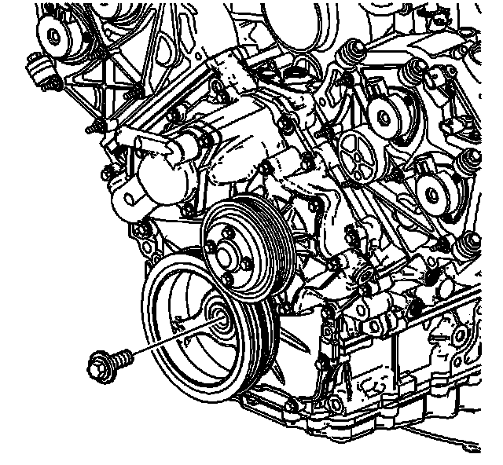
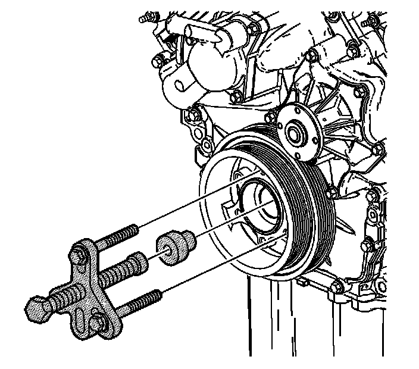
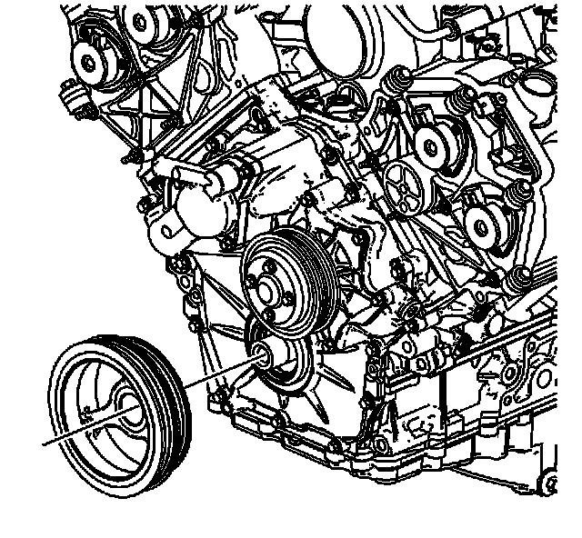
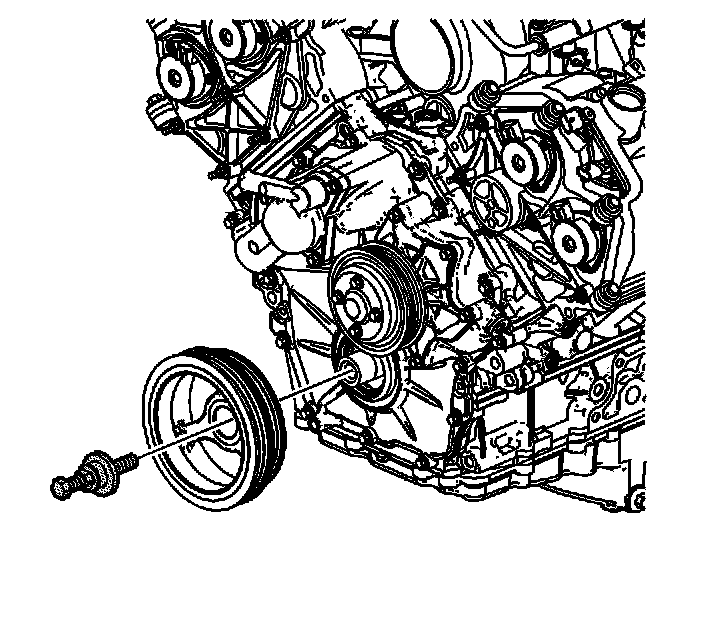

Harmonic Balancer - Crankshaft Pulley: Service and Repair
Crankshaft Balancer Replacement
Tools Required
* J 24420-C Crankshaft Balancer Remover
* J 38416-2 Crankshaft Button
* J 41998-B Crankshaft Balancer Installer
* J 45059 Angle Meter
* EN-48018 Flywheel Holding Tool
Removal Procedure
1. Remove the accessory drive belts. Refer to Generator Drive Belt Replacement (Generator Drive Belt Replacement) and to Water Pump and Air Conditioning Compressor and Power Steering Pump Belt Replacement (Water Pump and Air Conditioning Compressor and Power Steering Pump Belt Replacement) .
2. Raise and support the vehicle. Refer to Lifting and Jacking the Vehicle (Service and Repair) .

3. Remove transmission bell housing inspection hole cover.
4. Install the EN-48018 flywheel holding tool as shown.

5. Remove the crankshaft balancer bolt.

6. Place the J 38416-2 crankshaft button into the end of the crankshaft.
7. Install the J 24420-C on the crankshaft balancer.

8. Remove the crankshaft balancer using the J 24420-C .
9. Clean and inspect the crankshaft balancer. Refer to Crankshaft Balancer Cleaning and Inspection () .
Installation Procedure
1. Position the crankshaft balancer on the nose of the crankshaft.

2. Press the crankshaft balancer in place using the J 41998-B .
3. Clean the crankshaft balancer bolt threads.
4. Apply engine oil to the crankshaft balancer bolt threads.
Notice: Refer to Fastener Notice (Fastener Notice) .
5. Install the crankshaft balancer bolt.
1. First Pass: Tighten the bolt to 50 N.m (37 lb ft).
2. Final Pass: Tighten the bolt an additional 120 degrees using the J 45059 .
6. Remove the EN-48018 .
7. Install the transmission bell housing inspection hole cover.
8. Lower the vehicle.
9. Install the accessory drive belts. Refer to Generator Drive Belt Replacement (Generator Drive Belt Replacement) and to Water Pump and Air Conditioning Compressor and Power Steering Pump Belt Replacement (Water Pump and Air Conditioning Compressor and Power Steering Pump Belt Replacement) .